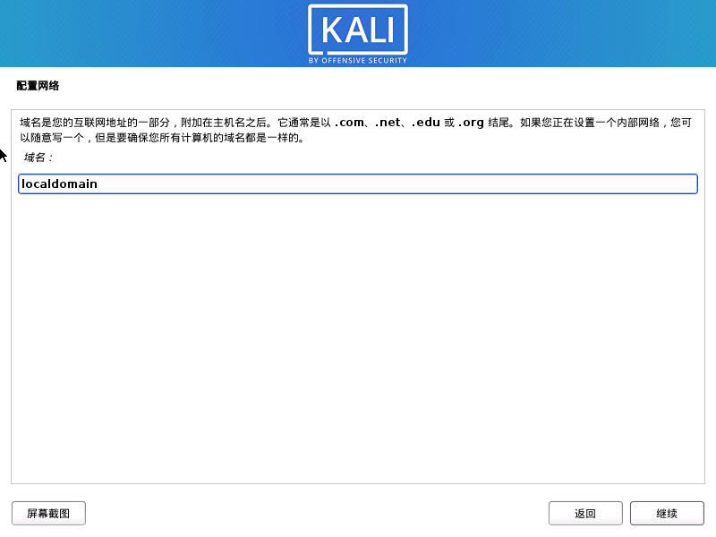
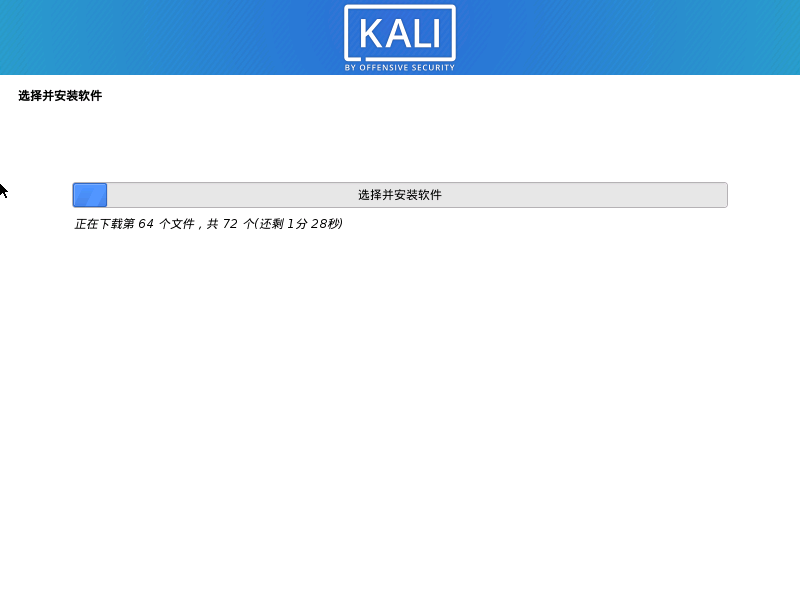

2020kali安装
九月 27, 2020

前言：kali作为信安之路的最强帮手，内置了许多的黑客工具，学习怎么安装，自然也是尤其重要，这里主要讲解的是kali在虚拟机的安装，并不推荐安装在物理机上。切记——以白不以黑。
下载镜像与vmware workstation
这个很基础，应该都懂，大概。开始安装

稍后安装
选择系统
名称选择自己想要的（我这里不记得选了），位置（我这里是自己设置专门的虚拟机系统存放点）。
处理器（跟着我就好，或者你需要更高的配置）

内存（我一般给2G,要是电脑好,给多一些也行）
网络（选择桥接模式）

控制器（选推荐就对，有问题也是他的问题）

磁盘类型（老样子选推荐）
创建新磁盘，选第一个
磁盘大小，20G我觉得不过分(要是你有更高的需求)
编辑虚拟机设置

我通过这里把名字改成kali
这里改成使用iso（我的镜像放的地方，和你的也许不一样要注意）
网络适配器（桥接顺便复制）

连接自己的手机热点（这里很玄学）
我们开始安装系统，按下启动键！跟紧我




我记得这附近没有截图


选第一个（还有另外一种结果，就全选）这里之后要等很久


只要保持网络不断就好，这里好了后面就容易了


按你之前设置的账号密码
登陆后就要获得root权限了(2020的kali比较特殊，不能直接登录root)
修改root密码
1 | sudo passwd root |
登录root
1 | su - root |
查看评论